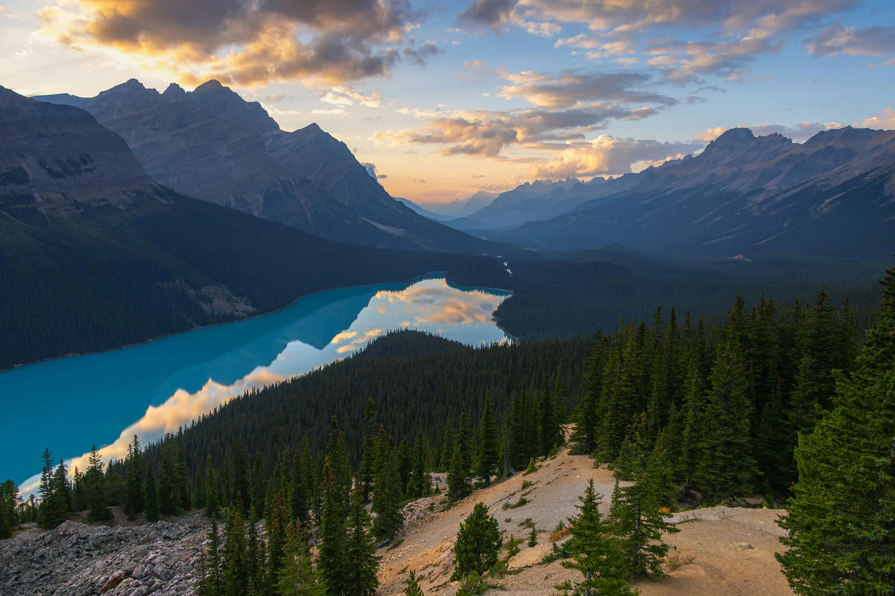
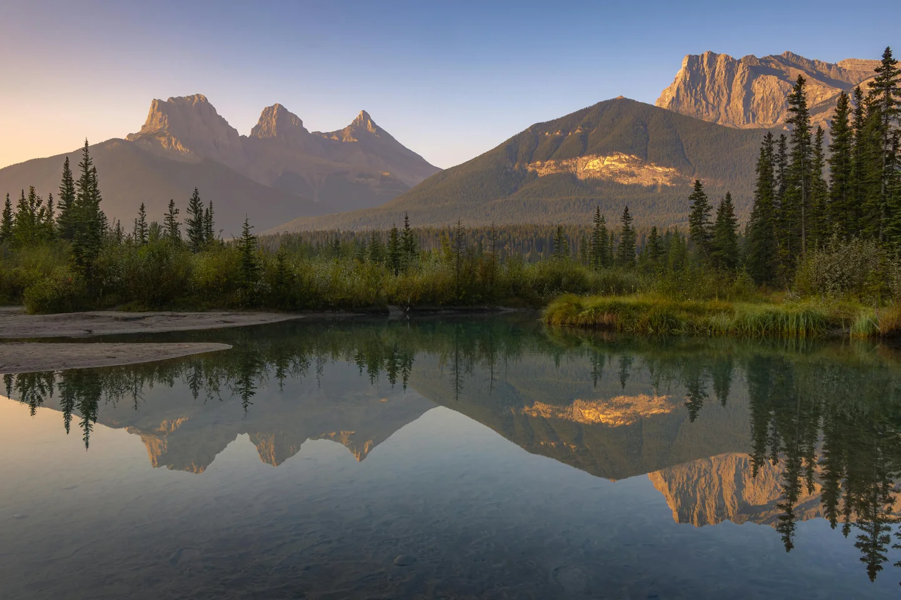
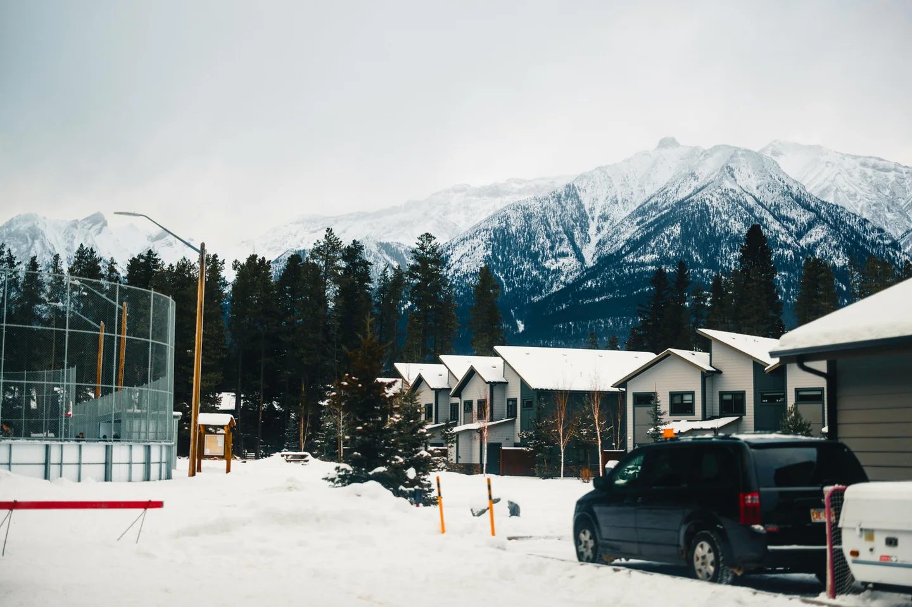
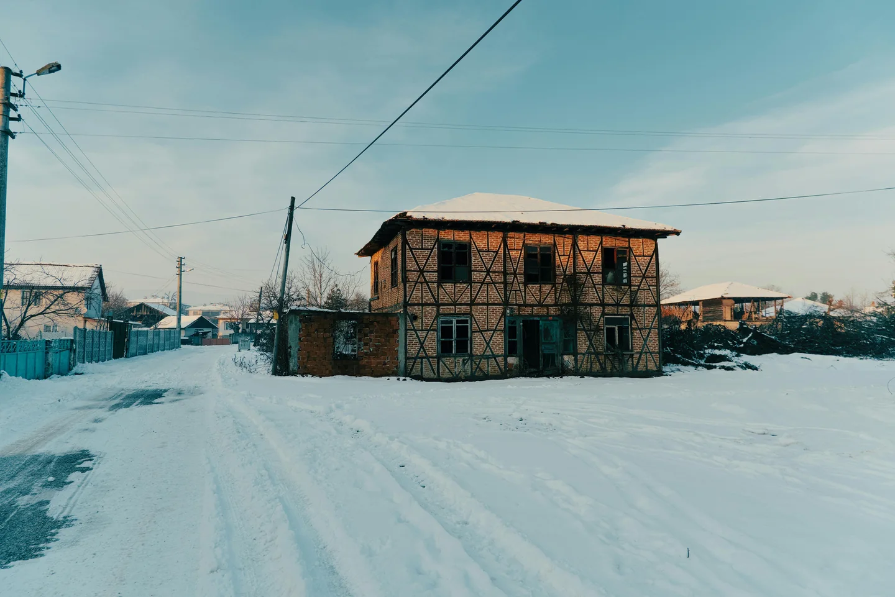

01MOUNTAINSMount Logan: 5,959 m

CANADA
YUKON
A new life, a new adventure, your Canadian Dream!
STIERLEN Victoria • MOUSSA Layan • TUNCQ Margot • PRÉVOST MartinClass: 1ère4 | Final Task: Share your Canadian Dream
01
MEET YUKON
482,443 km²Almost as big as France
≈ 48,000people in the whole territory
80%live in the Whitehorse area

Capital: WhitehorseLargest city · North-west Canada, next to Alaska (USA)
02
WILD LANDSCAPES
02LAKES & RIVERSYukon River

03SNOW & AURORASRecord: -63°C
03
WHY YUKON?
Justin Bieber’s “Yukon”The song that made me curious
Wild natureDreamy landscapes, big forests, mountains
Freedom & quietFresh air, friendly people, not big cities
04
OUR LIFE IN YUKON
STUDY
- Yukon University
- Porter Creek Secondary School
- English & French schools
WORK
- Mining, tourism, health care
- Yukon Nominee Program
- 282 spots in 2026
QUALITY OF LIFE
- Up to 19 h of daylight
- Skiing, hiking, paddling, hockey
- Arts & cultural festivals
05
WHY MOVE TO YUKON?
+27.2%population growth in 10 years (2016–2026)
282Yukon Nominee Program spots in 2026
2official languages: English & French
Thousands of people moved there to find it. Maybe you will be the next millionaire!
Much cooler than a taxi!
No traffic jams, no crowds. More chances of meeting a moose than being stuck in traffic!
In the city center of Whitehorse. It’s not just a Canadian bar, it’s an experience!
“Come for the jobs, stay for the double-doubles.”
Vivi · immigrated to Yukon in 2016
“The people of the Yukon were much more welcoming and friendly than those in the United States.”
Margot · left the U.S. for Yukon

06
CANADIAN DREAM vs AMERICAN DREAM
CANADIAN DREAM
AMERICAN DREAM
HEALTH
Public health care
Mostly private insurance
SAFETY
1.9 homicides / 100,000
5.7 homicides / 100,000
NEWS
Fast-track for skilled workers
$100,000 fee for new H-1B visas
SPACE
0.1 person per km² in Yukon
About 35 people per km²
Sources: Statistics Canada (2023), Yukon Bureau of Statistics, news 2025
A NEW LIFE,A NEW ADVENTURE,YOUR CANADIAN DREAM!
Nature • Opportunity • Community
Come on in, the door’s unlocked!
OUR VIDEO07